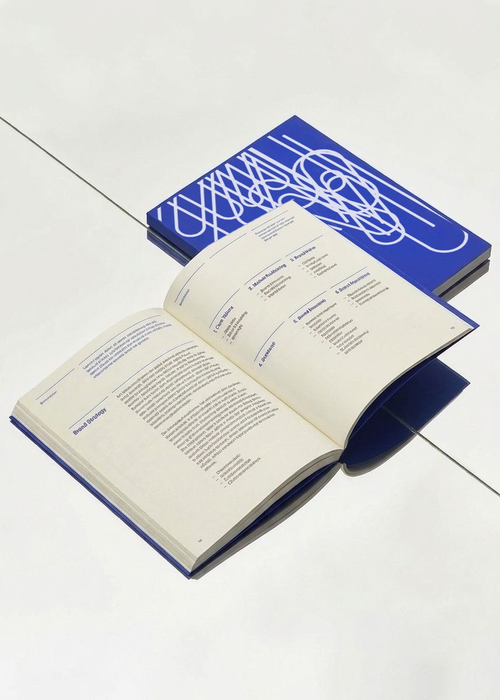

01
Brand Strategy
Great brands grow not from making more decisions, but from making better ones. We build a strategy that tells you where to compete, how to be different and what to avoid, so that your brand becomes the one people reach for.
It’s all based on real consumer insights verified in your product category, and delivered as a clear, structured document your team can actually use to drive commercial growth.
Includes:
- Consumer Understanding
- Competitive Space
- Brand Positioning
- Brand Essence
- Value Proposition
- Brand Voice
- Brand Feelings
- Brand Mission
- Growth & Advertising Logic